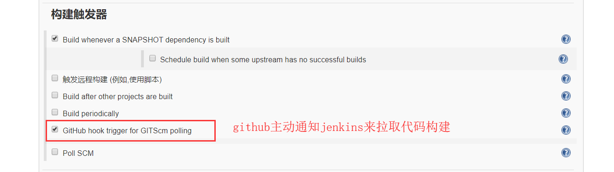
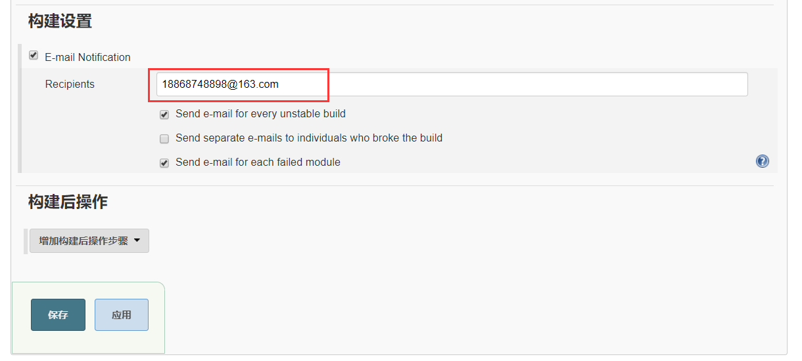

当 github 上传代码后，主动通知 jenkins 去拉取代码，自动化构建项目。
Github获取 Personal access tokens
登陆github -> settings -> Developer settings -> Personal access tokens
需要选上图中的两个复选框，这样Jenkins才能配置github服务器
确认后生成的 token要保存起来，这个只会显示一次。
然后我们就可以去配置Jenkins的github服务器。
jenkins 配置 Configure System

添加凭据

类型需要选择Secret Text，这里出现的 Secret 就是我们之前去github生成的 Personal access tokens，再写个描述，确认就ok了。
点击连接测试后，如果下方显示的是Credentials verified for user tangliangdong, rate limit: 4994表明连接成功了。
配置Maven项目
因为项目使用pom.xml文件构建的，我们就直接创建一个maven项目，选择 构建一个maven项目
如果没有这个选项，则需要去jenkins插件管理中去安装一个 Maven Integration插件，然后重启jenkins就能使用了。
接下来就要带着我们的 github仓库地址 到处粘贴了，
1 | https://github.com/tangliangdong/user-dev.git |
Credentials 需要github登陆的凭据。
源码库浏览器必须指定，输入的url还是github仓库地址，不带 .git

当我们向user-dev 仓库提交代码后，github会主动通知我们的jenkins去拉取代码，进行一次构建。
在 构建环境 中 Use secret text(s) or file(s)，选择的就是之前添加过的 Github access token
构建前执行 maven的命令
1 | clean package -P test |
构建失败后邮件通知。

配置 Github Webhook
进入 Github项目Settings -> Webhook，添加项目的 Webhook
添加Jenkins的Webhook地址，因为这个是Github接收到提交的请求后，去通知Jenkins网站来拉取代码，因此这里的配置Jenkins代码肯定是要在公网能访问到的，但我当时是在我的树莓派上配置的，因此需要用诸如花生壳这类的内网映射工具来将本地的IP端口映射到公网上，才能让github访问到。webhook地址如下，直接在访问jenkins访问地址后面加上/github-webhook就行了。
1 | http://2m7t216256.wicp.vip:12006/github-webhook/ |
绿色表示可以使用了，
我们向 user-dev 提交代码，就能看到Jenkins在自动拉取代码进行构建了。